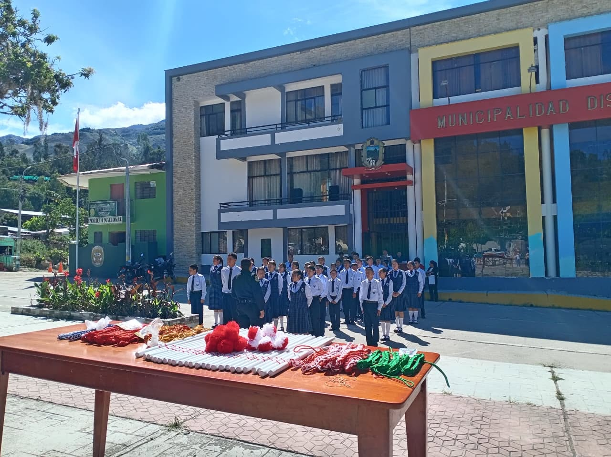
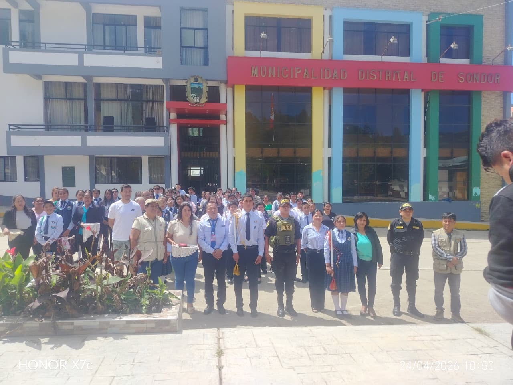
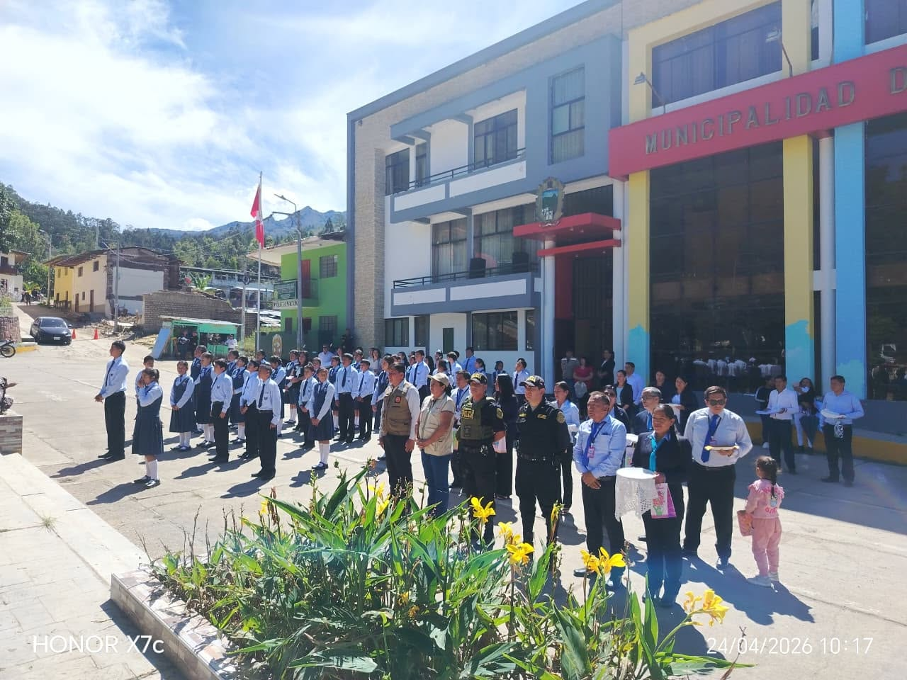
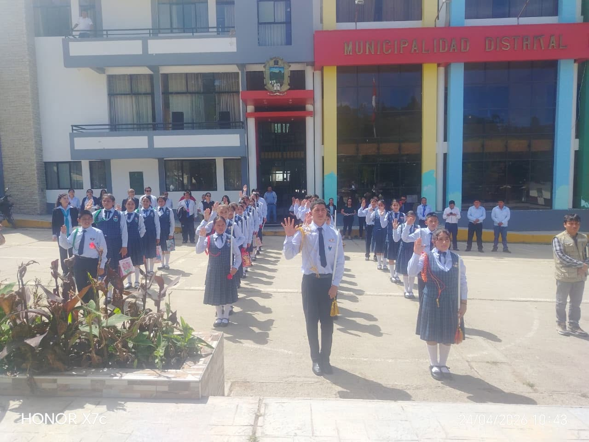
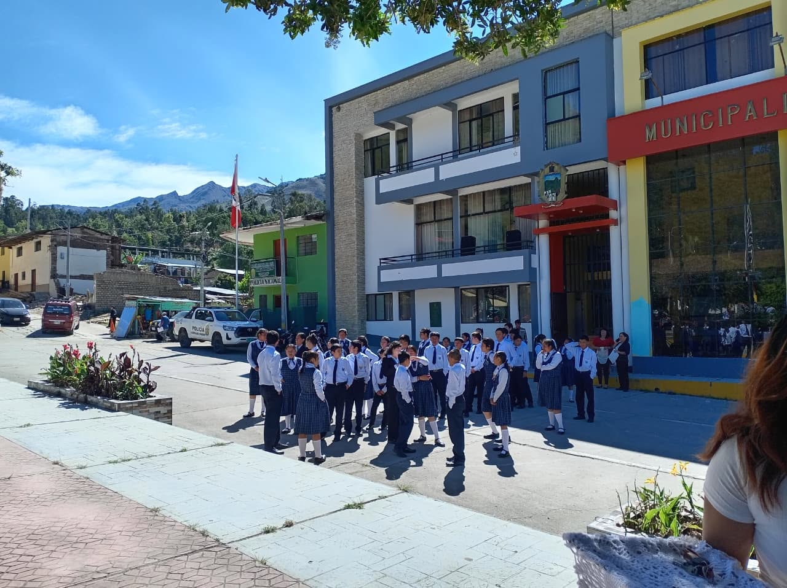
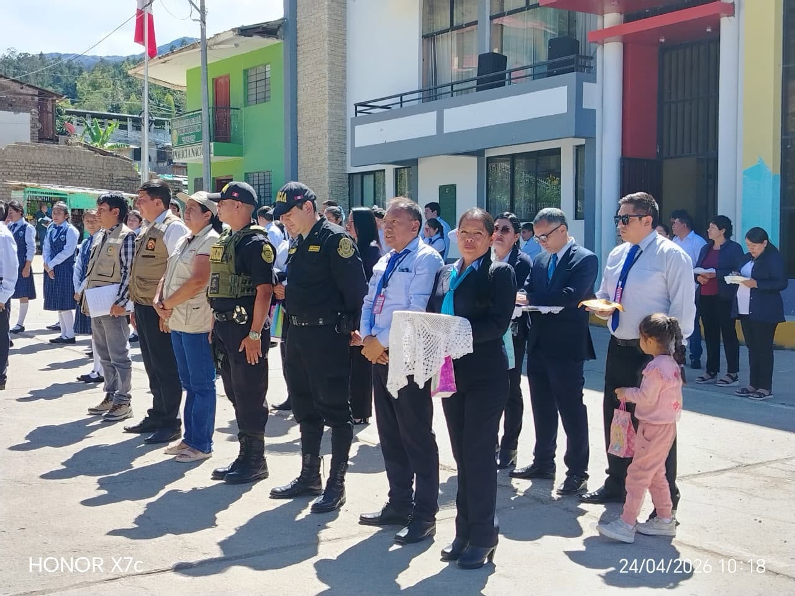

I.E. “Virgen de la Asunción” | Liderazgo Estudiantil
En la Institución Educativa “Virgen de la Asunción” se realizó la ceremonia de imposición de cordones e insignias de mando, un evento significativo que reconoce el liderazgo, la responsabilidad y el compromiso de nuestros estudiantes con la comunidad educativa.
Este acto representa un momento importante en la formación integral de los estudiantes, quienes asumen el compromiso de liderar con integridad, empatía y responsabilidad.
Los estudiantes destacados asumen el rol de líderes escolares, promoviendo la convivencia armoniosa, el orden y el trabajo en equipo dentro de la institución educativa.





